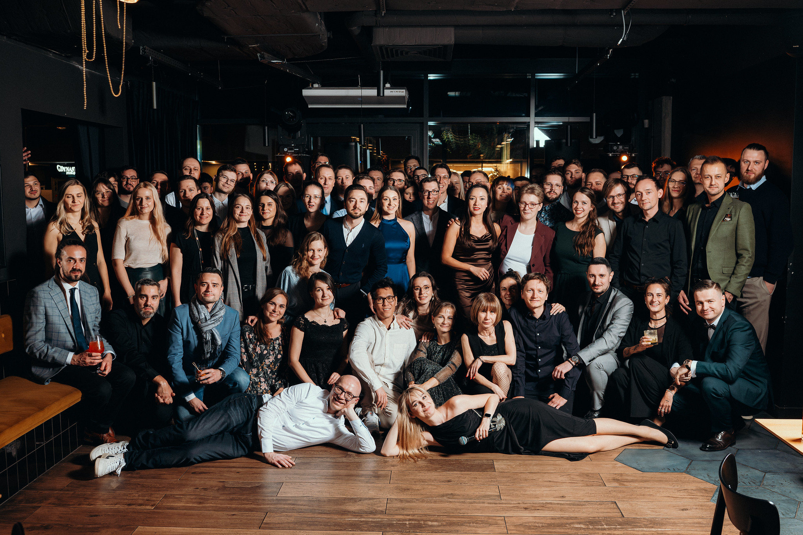

Entrepreneur
Born in Poland. Raised in Bavaria. Building digital businesses since 2001. Here's my journey from curious teenager to running a 100+ person company.
The Beginning
It was 2001. The dot-com bubble had just burst, and everyone said the internet was over. I didn't get the memo.
While others saw wreckage, I saw opportunity. The web wasn't dying — it was just getting started. And I wanted to be part of building it.
That year, I became a web entrepreneur. No business plan, no investors, no safety net. Just a deep conviction that the internet would change everything — and the stubborn determination to figure out how.
Building creativestyle
What started as a one-person operation grew into creativestyle — now a team of over 100 e-commerce experts across Munich and Krakow.
We've helped brands like Media-Markt, Saturn, Miele, Mammut, and many others build digital commerce that actually works. Not flashy demos. Not PowerPoint strategies. Real platforms, real revenue, real results.
The secret? We never forgot what it felt like to be small. To have limited resources. To need every project to succeed. That hunger never left — it just scaled.
Joining Forces
In 2022, creativestyle became part of the Smile Group — Europe's largest network of open source integrators. It wasn't an exit. It was an expansion.
Suddenly, we weren't just a German-Polish agency anymore. We were part of something bigger: a European alliance committed to open source, digital sovereignty, and technology that serves people — not the other way around.
Same mission. Bigger playground.
SensioLabs & Symfony
I also serve as General Manager of SensioLabs Deutschland — the company behind the Symfony PHP framework that powers millions of websites worldwide.
It's a privilege to work at the intersection of open source and enterprise. To help companies adopt technology that's transparent, community-driven, and built to last.
What Drives Me
Simplicity over complexity. The best solutions are the ones you can explain in one sentence.
Ownership over dependency. Build things you control. Use tools that don't control you.
Action over perfection. Ship early, learn fast, improve constantly. The market is the ultimate teacher.
People over processes. Great companies are built by great people who give a damn. Everything else is just scaffolding.
Roots
I was born in Poland and grew up in Bavaria, Germany. That mix shaped me more than any business book ever could.
From Poland: resilience, resourcefulness, and a healthy skepticism of the status quo.
From Bavaria: precision, reliability, and an obsession with getting things right.
Today, I call Munich home. But my heart — and my company — spans borders.
Let's Connect
Whether you're building something new, fixing something broken, or just want to exchange ideas — I'm always happy to talk with fellow builders.